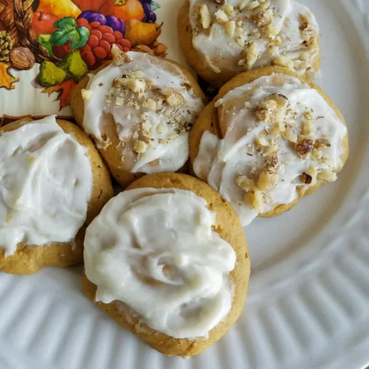

Pumpkin Cookies with Cream Cheese Frosting

Description
These pumpkin cookies with cream cheese frosting are a little sweet,
a little spicy, and chock-full of cozy fall flavor.
Ingredients
Cookies:
- 2 cups all-purpose flour
- 1 teaspoon baking powder
- 1 teaspoon ground cinnamon
- ½ teaspoon baking soda
- ½ teaspoon ground nutmeg
- ½ teaspoon ground ginger
- 1 cup unsalted butter, softened
- ¾ cup white sugar
- ¾ cup brown sugar
- 2 teaspoons vanilla extract
- 1 large egg
- 1 (15 ounce) can pumpkin puree
Frosting:
- 1 (3 ounce) package cream cheese, softened
- ¼ cup unsalted butter, softened
- 1 teaspoon vanilla extract
- 2 cups powdered sugar
Steps
- Preheat the oven to 350 degrees F (175 degrees C).
Lightly grease two baking sheets.
- Make cookies: Whisk flour, baking powder, cinnamon,
baking soda, nutmeg, and ginger together in a bowl.
- Beat butter, both sugars, egg, and vanilla with an
electric mixer in a separate large bowl until smooth.
Beat in pumpkin puree. Gradually stir dry ingredients
into pumpkin mixture until combined; batter will be moist.
- Drop teaspoonfuls of batter about 2 inches apart onto
the prepared baking sheets.
- Bake in the preheated oven until cookies are lightly browned,
10 to 12 minutes, switching racks halfway through.
- Remove from the oven and let cool on the sheets for 5 minutes.
Transfer cookies to a wire rack and cool completely, about 25 minutes.
- While the cookies are cooling, make frosting: Beat cream cheese,
butter, and vanilla in a bowl with an electric mixer until soft and
creamy. Beat in powdered sugar, about 1/2 cup at a time, until frosting
is smooth and spreadable.
- Spread frosting over cooled cookies.